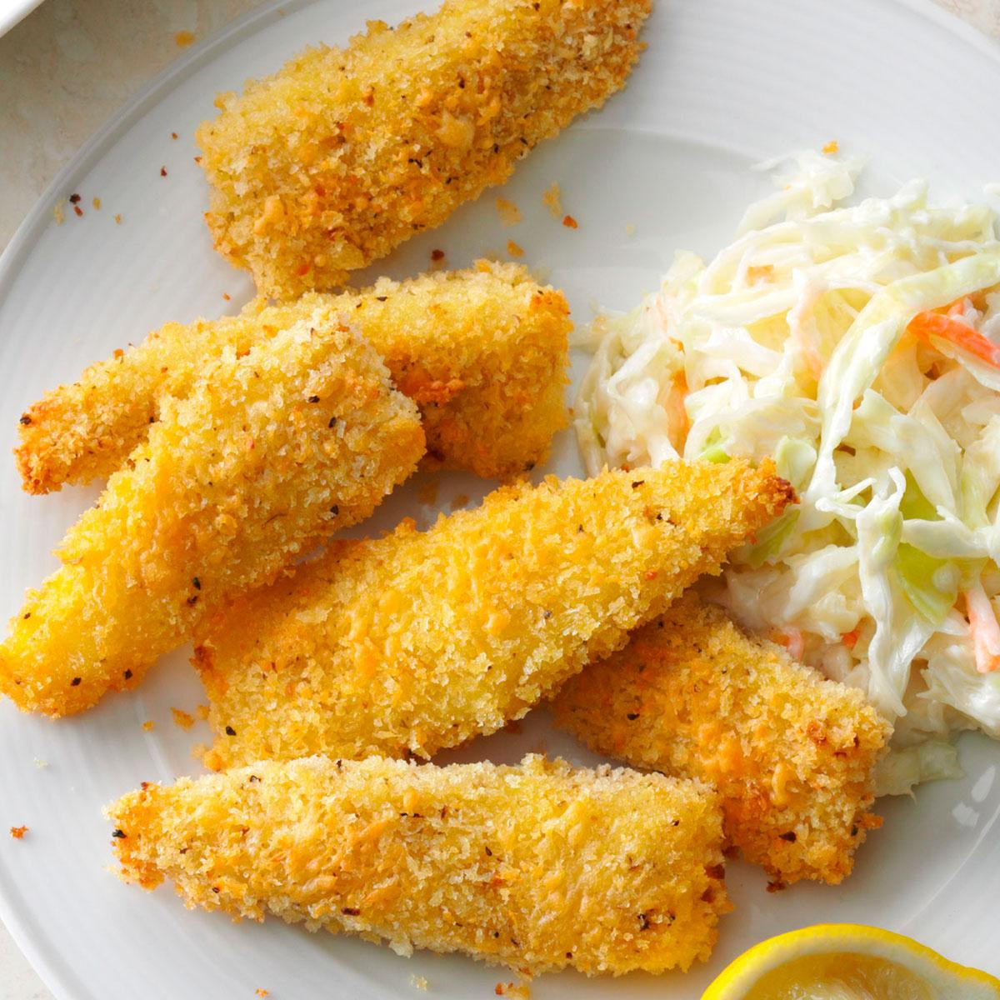

Description
This is an easy-to-make, healthier version of your classic, delicious fish stick. Kids love them and they're fast and easy to make.
Ingredients
Fish Sticks:
- ½ cup all-purpose flour
- salt and ground black pepper to taste
- 2 eggs
- ½ cup panko bread crumbs
- ¼ cup grated Parmesan cheese
- ½ teaspoon dried basil
- ½ teaspoon dried oregano
- 4 (6 ounce) halibut fillets, cut into 3x1/2-inch strips
- olive oil, or as needed
Dipping Sauce:
- ¼ cup ketchup
- ¼ cup mayonnaise
- 1 ½ tablespoons malt vinegar
Steps
- Preheat oven to 450 degrees F (230 degrees C). Line a baking sheet with aluminum foil.
- Whisk flour, salt, and pepper together in a shallow bowl. Beat eggs in a separate bowl until frothy, about 30 seconds. Combine panko bread crumbs, Parmesan cheese, basil, and oregano in a third shallow bowl.
- Dredge fish through the flour mixture until evenly coated, shaking off excess flour. Dip fish into egg, allowing excess egg to drip into bowl. Press fish into the panko mixture until evenly coated. Arrange coated fish on the prepared baking sheet. Drizzle olive oil over fish.
- Cook in the preheated oven until fish sticks are golden brown and flake easily with a fork, about 15 minutes.
- Mix ketchup, mayonnaise, and malt vinegar together in a bowl and serve alongside fish sticks.